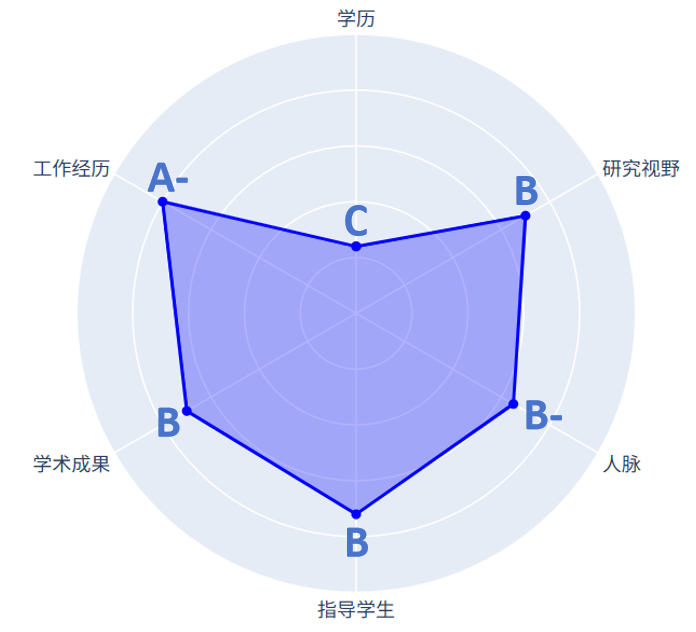

隐藏信息
以下信息是写给有短板的同学们看的，实力强的同学们可以忽略。
基于我的学术生涯，我做了一张自我评价图。我的短板也不少，所以我很能理解一路走来很难做到一帆风顺。

因此，有短板也不要沮丧。在邮件里，我需要你给我一个选你的理由。有没有亮点能让我忽略你的短板？
非顶尖学历
自己当年淋过雨，所以现在愿意提供一把伞。我不会单以学历背景筛选学生。
- 可以用高GPA来体现自己的学习能力。
- 可以用成长式路线来体现潜力与后劲。
- 可以用相关专精技能突出自己的隐藏实力。
没有顶会发表经验
- 简短概括在投/进行中的项目。自己在项目中承担是角色是什么，哪些部分是自己完成的，哪些想法是自己提出的。
- 展现强大的工程动手能力。
- 能体现出科研细节的推荐信。
没有太多相关科研经历
- 对感兴趣方向的脉络梳理与总结。
- 自己动手尝试复现代码，理解细节。
- 对大体方向或具体文章的独特思考。
写在最后
我总结的一个不成熟公式：成果产出 = Fn(专注程度，投入时间，个人效率， 其他因素）
- 专注程度：我之前有带过的背景很好的学生，但多个项目同时进行。前期尚且能跟上，但中期开始每个项目所需的经历超过预期，导致只能被迫放弃某个项目。因此对于实力不是很强的实习生，能确定专注于一个项目对我来说是加分项。
- 个人效率：与卷时长相比，我更鼓励提高时间利用率，在特定时间段能完全专注不分心。
- 其他因素：可以有很多，比如我一朋友的特点就是幸运，跟他合作逢投必中。
最后祝看到这里的同学们都能走上最适合自己的路。
← 返回加入我们